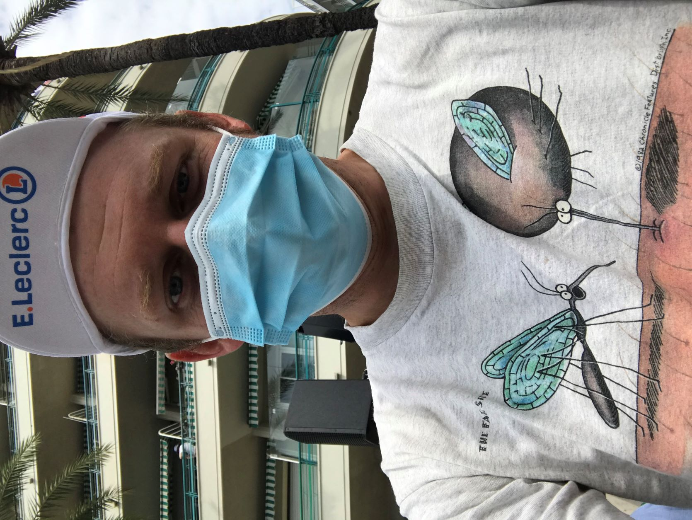
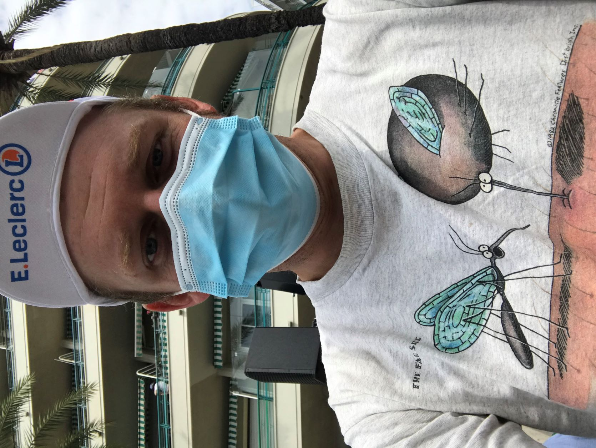

Greetings and welcome
My name is Tom and I'm probably teaching English right now. I'd like to share my other interests with you too but this is an intensive class so we'll just cover that running.
I'll assume you all have some idea what's on the TOEIC test but it also changes so it's important to stay updated. What do you think they are?

 
